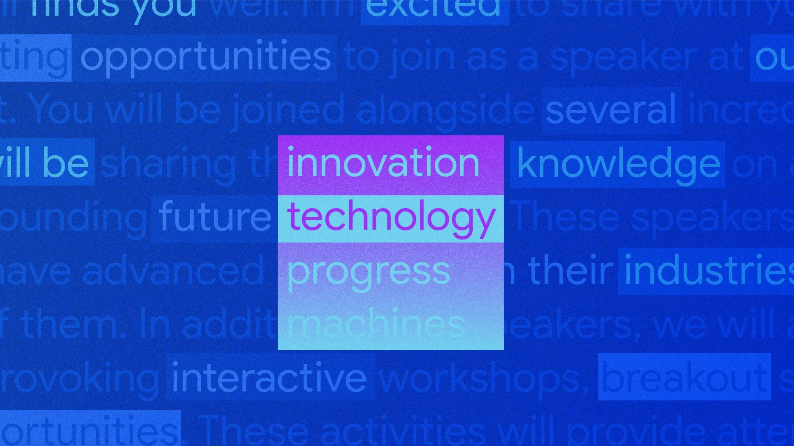

Google I/O 2024
- “우리는 Gemini 시대에 살고 있습니다”
-
현지시간 14일, 구글의 연례 개발자회의인 Google I/O 2024가 미국 캘리포니아에서 개최되었습니다. 구글 CEO 순다르 피차이는 “이제 완전히 Gemini era에 살고 있다”며 자신있게 발표의 문을 열었습니다. 현재 구글의 최고 모델인 Gemini 1.5 Pro는 한 층 더 개선된 모습이 공개됐고, 속도 처리가 Pro보다 더 좋은 Gemini 1.5 flash도 새롭게 선보였습니다. 이번 발표는 특정 기능에 집중하기보다는 Gemini가 적용될 구글의 여러 서비스(검색엔진, 구글 맵, 구글 워크스페이스 등)의 모습들이 열거되는 형태로 구성됐습니다.
- 구글은 구글 검색에 맞춤화된 Gemini 모델을 사용해 AI 검색을 재설계했습니다.
-
가장 큰 변화는 AI 개요(AI Overview)입니다. 구글링을 하다보면 종종 마주치는 AI 검색 결과가 바로 이 녀석의 프로토타입입니다. 앞으로 구글 검색에서는 AI 개요가 빠른 답변을 해주게 됩니다. 당장 이번주부터 미국 내 이용자들은 사용할 수 있고, 곧 더 많은 국가에 적용될 예정입니다.
- Workspace에 적용된 Gemini를 통해 구글의 AI 에이전트 프로토타입을 엿볼 수 있습니다.
-
구글 드라이브, 구글 독스, 구글 시트, 구글 프레젠테이션, 구글 캘린더, 지메일 등 업무 처리에 필요한 구글의 모든 도구가 모여있는 클라우드 기반 협업 서비스 Workspace가 있습니다. 이 구글 Workspace에도 Gemini가 적용됩니다. 구글 독스, 시트, 슬라이드 작업을 하면서 Gemini를 통해 해당 앱의 콘텐츠를 검색하고 요약할 수 있습니다. 구글은 나아가 지메일 받은편지함에 있는 영수증을 알아서 구글 시트로 정리해주는 형태의 AI 에이전트 서비스도 제시했습니다.
Project Astra
- DeepMind는 ‘Project Astra’라는 프로토타입 AI 에이전트를 발표했습니다.
-
이번 발표에서 구글 딥마인드 CEO 데미스 하사비스가 I/O 무대에 첫 데뷔를 했습니다. 우리에겐 이세돌과의 대국을 한 알파고의 핵심 개발자로 익숙한 AI 연구자이죠. Project Astra를 통해 공개된 AI는 실시간 질문에 영상과 음성을 통해 대화로 답변합니다. Astra는 스마트폰의 카메라, 마이크를 사용하여 주변 환경을 분석하고 볼 수 있습니다. “내가 안경 어디다 벗어 두었지?” 라는 질문(동영상의 1분 22초 부근)에 정확히 안경의 위치를 대답해주는 모습을 확인할 수 있습니다.
책임 있는 AI 실천

- 이번 발표에서 구글은 생성형 텍스트에도 워터마크를 넣는 기술을 발표했습니다.
-
구글은 작년 AI 생성 콘텐츠를 식별할 수 있는 ‘SynthID’ 워터마크 기술을 발표했습니다. 이미지, 사운드를 넘어서 텍스트와 비디오에도 SynthID는 적용됩니다. 사실 AI 생성 텍스트를 발라내는 건 여간 까다로운 일이 아닙니다. 구글은 LLM의 텍스트 생성 프로세스 자체에 워터마크를 삽입해 해결했습니다. LLM이 문장을 완성해 나갈 때는 각 토큰의 확률 점수를 계산해 가장 확률이 높은 토큰을 제시하는 식으로 진행됩니다. 아래 동영상에 그 예시가 나타나있습니다.
: 토큰 선택지가 여러개 있을 때, 문장의 품질과 정확성을 손상시키지 않는 범위 내에서 SynthID는 토큰의 확률 점수를 조정합니다. 이 과정이 전체 텍스트 생성에 반복되면 조정된 확률 점수가 포함된 최종 점수가 나오게 되고요. 이 최종 점수의 패턴을 일종의 워터마크로 파악하는 겁니다. SynthID의 텍스트 워터마킹은 Responsible Generative AI 툴킷을 통해 몇 달 안에 오픈 소스로 공개될 예정입니다.
- 사회에 도움이 될 학습용 AI, LearnLM도 공개했습니다.
-
LearnLM은 Gemini를 기반으로 하고 학습에 맞게 미세 조정된 새로운 모델입니다. 이미 일부 검색과 YouTube, Google 클래스룸 등에 지원되고 있는데요. 유튜브의 대화형 교육 동영상에서 퀴즈를 내주고, 단계별로 학습을 돕는 역할을 합니다. 앞으로 구글은 Columbia Teachers College, Arizona State University, NYU Tisch 등과 같은 기관의 전문가와 협력하여 LearnLM을 제품 이상으로 개선하고 확장할 예정이라고 합니다.